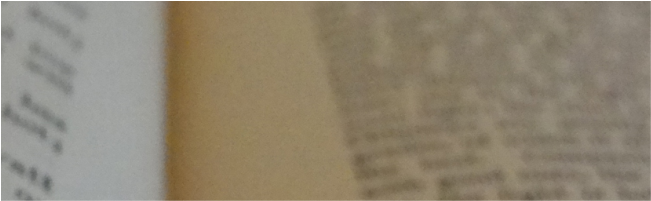

En français
Accueil (espagnol) > En français
À propos du site | Projets et espaces de travail | Blogs | Thématiques critiques | L'auteur | Contact & réseaux | Publications et archives | Activités | Services & Tela de Araña | Copyright | Disclaimer | Histoire
À propos du site
Je m'appelle Edgardo Civallero. Je suis bibliothécaire, archiviste, écrivain, chercheur, musicien et naturaliste. Mon travail relie les systèmes de connaissance, la mémoire culturelle, les instruments de musique et l'écologie. J'écris depuis Quisquiza, dans les Andes colombiennes, où je participe également à la restauration de la forêt native.
Actif depuis 2022, ce site réunit les principaux domaines de mon activité professionnelle et créative : bibliothéconomie, archivistique, conseil sémantique, édition, recherche sur la musique et les instruments de musique, écriture, art et histoire naturelle.
Dans ces domaines, mon travail examine la manière dont les savoirs et la mémoire sont organisés, préservés, communiqués et contestés. Il repose sur un engagement en faveur de l'équité sociale et de la défense des cultures et du monde vivant.
Le site offre un espace commun à des projets développés depuis 2000, notamment des initiatives actuelles ainsi qu'un ensemble de publications et de travaux numériques antérieurs. Chaque projet conserve son identité propre et, lorsque cela est pertinent, sa propre plateforme indépendante.
Vous pouvez y consulter mes publications, découvrir les projets que je dirige et me contacter pour des propositions de conseil, de recherche, d'écriture, d'édition ou d'autres formes de collaboration.
Projets et espaces de travail
Autour de ce site gravitent plusieurs espaces de travail interconnectés, consacrés à la recherche, au conseil, à l'édition, à la musique et à la création. Certains disposent de leur propre plateforme, tandis que d'autres sont présentés sur ce domaine. Ensemble, ils interrogent nos manières de produire, d'organiser et de transmettre les savoirs et la mémoire.
Tela de Araña est mon studio indépendant d'architecture sémantique et épistémique, où j'exerce mes activités de conseil et de conception. Je soutiens les institutions, les organisations et les collectifs dont les systèmes de connaissances sont confrontés à la complexité — qu'elle soit liée à la croissance, à la dispersion des corpus, à l'évolution des flux de travail ou à l'accumulation de structures héritées. Le studio intègre le diagnostic, la conception structurelle, la modélisation sémantique et la mise en œuvre éditoriale afin de construire des écosystèmes de savoir et de mémoire durables, cohérents et adaptables.
Wayrachaki Editora et El Zorro de Abajo Editora sont des maisons d'édition indépendantes qui publient des œuvres généralement exclues des circuits commerciaux et universitaires. Wayrachaki Editora se concentre sur la bibliothéconomie critique, les archives contestataires, la critique décoloniale et la classification comme forme de résistance. El Zorro de Abajo Editora travaille avec la musique traditionnelle, la fabrication d'instruments, l'expérimentation sonore et la mémoire orale. Toutes deux produisent des publications numériques en libre accès, conçues comme des actes d'archivage, de persistance et de survie.
Instrumentarium rassemble mes recherches et ma documentation sur les instruments de musique traditionnels — en particulier ceux d'Amérique latine — abordés sous l'angle de l'organologie, de l'ethnomusicologie et des études mémorielles. J'y considère les objets sonores comme des documents porteurs d'informations biologiques, géographiques, historiques et culturelles. Ses productions comprennent des articles, des livres, du matériel pédagogique, des enregistrements, des expositions, des ateliers et des recherches, ainsi que le système de classification des instruments de musique MusIC.
Estudio paramuno est mon atelier de création à Quisquiza, dans les Andes colombiennes. J'y compose, interprète et enregistre de la musique originale avec des instruments traditionnels, modifiés ou expérimentaux. J'y écris également des fictions, dessine, photographie, fabrique des instruments et des marionnettes, et expérimente avec des matériaux récupérés et des techniques simples. Cet espace réunit des œuvres achevées, des projets en cours et des recherches sur les relations entre matière, mémoire, écologie et imagination.
Blogs
Ce site réunit quatre blogs. Chacun explore une facette particulière de mon travail avec les bibliothèques, les archives, la science, la mémoire et la culture. Leurs styles et approches varient, mais tous partagent une même perspective critique sur la manière dont le savoir est produit, structuré et contesté.
Crónicas de un biblio-naturalista ("Chroniques d'un biblio-naturaliste", en espagnol et en anglais) explore les croisements entre biodiversité, conservation, savoirs traditionnels et mémoire, en reliant bibliothèques, archives, travail de terrain et pratiques communautaires pour faire émerger les récits invisibles qui façonnent notre planète.
Bitácora de un bibliotecario ("Carnet de bord d'un bibliothécaire", en espagnol et en anglais) propose une analyse critique des bibliothèques, des archives et des politiques du savoir, en abordant des thèmes comme la responsabilité sociale, les perspectives décoloniales, les traditions orales et les luttes des communautés marginalisées dans les espaces d'information.
Notas críticas ("Notes critiques", en espagnol et en anglais) est un espace de réflexion radicale, où tensions entre information, politique et culture sont mises en lumière. On y interroge les certitudes, les idées s'y confrontent, et le rôle du savoir dans la construction du monde y est constamment remis en question.
Enfin, Cajón de sastre ("Fourre-tout", en espagnol et en anglais) est un territoire sans frontières rigides, où convergent des thèmes divers, toujours ancrés dans l'univers des bibliothèques, de la connaissance et de la mémoire. On y trouve des explorations inattendues, des connexions improbables et des réflexions qui échappent aux cadres conventionnels, mais ouvrent d'autres manières de penser l'information et la culture.
Ensemble, ces blogs forment un réseau critique : une cartographie des formes par lesquelles le savoir circule, s'efface et se reconstruit.
Thématiques critiques
Mon travail s'organise autour de fils conducteurs — non pas des catégories figées, mais des tensions vives, des réseaux de sens. Ces thématiques traversent mes publications, mes interventions, mes archives, mes sons. Elles surgissent, se croisent, se transforment. Elles tissent des connexions imprévues entre mémoire, savoir, politique, culture et territoire.
Parmi ces axes, on retrouve: les épistémologies insurgentes et les savoirs des marges; les silences structurels et les mémoires orales; les sons comme formes de savoir; les documents autres, non écrits, non nommés; les gestes éditoriaux comme actes critiques; et les bibliothèques comme lieux de résistance. Ces thématiques ne classifient pas — elles relient, elles déstabilisent, elles proposent d'autres cartographies intellectuelles.
L'auteur
Je suis architecte sémantique et biblio-naturaliste, avec plus de vingt-cinq ans d'expérience à articuler mémoire, savoir et pensée écologique au sein d'institutions scientifiques, d'archives culturelles et de territoires communautaires. Né au Puerto de Santa María de los Buenos Aires (Argentine) en 1973, et résidant aujourd'hui entre Bogotá et Quisquiza, dans les Andes colombiennes, je conçois des infrastructures qui permettent aux collections scientifiques, aux documents d'archives et aux espaces de savoir multilingues de communiquer sans effacer les frictions, les silences ni les pluralités qui leur donnent sens.
Mon parcours en sciences de l'information et des bibliothèques a débuté en 1999 et s'est approfondi grâce à une spécialisation en épistémologies du Sud et à un master en archivistique historique et mémoire — après des incursions en biologie et en histoire, qui continuent de façonner ma manière de penser et de travailler. Avec le temps, j'ai dépassé les frontières rigides du travail informationnel conventionnel pour explorer les zones instables où les systèmes se dérobent: là où les métadonnées faillissent, où la classification aplanit la complexité et où les archives, selon les cas, effacent ou surexposent les vies qu'elles renferment. J'interviens dans ces interstices, en concevant des architectures sémantiques et épistémiques capables d'accueillir la multiplicité sans l'écraser.
Mon travail intègre ontologies, modèles de métadonnées, systèmes de classification, chaînes sémantiques, stratégies de données liées, architectures éditoriales et critique décoloniale. Je conçois le savoir non comme un contenu statique, mais comme un écosystème vivant et relationnel: qui nécessite des infrastructures capables de préserver les frontières, d'encoder les contextes et de permettre la traduction sans assimilation.
Je suis aussi écrivain, éditeur, marionnettiste, musicien et artisan. Je construis des systèmes, et je façonne des objets — instruments, artefacts, récits, images. J'exprime la complexité non seulement par des textes ou des métadonnées, mais aussi par le son, le geste, la matière et la forme. Mon travail s'ancre dans une épistémologie dissidente: je conçois des structures qui protègent les marges, traduisent sans assimiler, et tissent des mémoires situées.
Cette conception est nourrie par les multiples identités que j'ai portées: bibliothécaire, archiviste, blogueur, enseignant, chercheur, naturaliste, musicien, conteur, traducteur, luthier, illustrateur et travailleur culturel. Chacune d'elles soutient ma manière d'appréhender le savoir comme une entité territoriale, sonore, incarnée, écologique et politique.
Entre 2018 et 2023, j'ai travaillé aux îles Galápagos, où se rencontraient — et souvent s'entrechoquaient — conservation de la biodiversité, histoire des sciences, sciences participatives, décroissance, savoirs traditionnels et préservation de collections fragiles. C'est là, dans la friction entre espèces, littoraux, archives et disciplines, qu'a pris forme mon identité de biblio-naturaliste: une approche qui appréhende les écosystèmes, les paysages sonores, les bibliothèques et les collections documentaires comme des infrastructures parallèles de la mémoire, intimement entrelacées. Ce travail s'est prolongé à travers les mangroves, les forêts et les récifs coralliens du Panama, où j'ai dirigé la Bibliothèque et les Archives du Smithsonian Tropical Research Institute (2024-2025), et se poursuit aujourd'hui sur les pentes brumeuses de Quisquiza, où le savoir se comporte comme le climat et où la mémoire circule plutôt que de se fixer.
Aujourd'hui, je dirige Tela de Araña, mon cabinet de conseil en architecture sémantique et épistémique; j'ai créé et je dirige Instrumentarium, ma plateforme consacrée à l'étude des instruments de musique comme documents; je suis l'éditeur de Marginalia, de Wayrachaki Editora et d'El Zorro de Abajo Editora; et je développe mon travail artistique et musical au sein d'Estudio paramuno, un atelier créatif et épistémologique enraciné dans la forêt alto-andine.
À travers ces plateformes, je conçois des stratégies, des infrastructures et des récits qui interrogent les manières dont le savoir est organisé, préservé et activé, guidé par la conviction que la mémoire n'est pas ce qui demeure, mais ce qui résiste, se transforme et refuse de disparaître.
Contact & réseaux
Mon adresse e-mail est edgardocivallero (@) gmail (.) com.
Pour proposer une collaboration, merci d'indiquer brièvement le projet, l'organisation ou le collectif concerné, les dates envisagées, la langue souhaitée et les modalités pratiques. Je peux travailler en espagnol, en anglais, en français, en catalan, en galicien, en italien et en portugais. Selon le projet, les collaborations peuvent avoir lieu à distance ou en présentiel.
Je suis actif sur LinkedIn et Instagram, tandis que ma présence sur Facebook reste limitée. Les liens directs sont disponibles dans le pied de page.
Publications et archives
Cette section rassemble mes livres, articles, essais, textes de fiction, travaux photographiques et autres publications. Le répertoire des publications permet d'explorer ce travail par format, par parcours éditorial et par thème. Les plateformes ci-dessous répondent à des fonctions distinctes : accès aux documents, conservation de versions, citation ou découverte bibliographique.
- Acta Académica, pour la visibilité académique et la consultation d'un répertoire bibliographique partiel.
- Internet Archive, pour l'accès public et la préservation à long terme des travaux publiés.
- Google Drive, pour les copies téléchargeables, les documents de travail et les fichiers susceptibles d'évoluer.
- Zenodo, pour les versions déposées de manière pérenne et les identifiants DOI, lorsqu'ils existent.
Parmi les documents disponibles, on peut citer:
- Une série de livres numériques consacrés aux bibliothèques autochtones et à la gestion communautaire des savoirs.
- Travaux photographiques centrés sur la mémoire, les territoires et la biodiversité.
- Œuvres de fiction articulant histoire, identité et critique épistémologique.
Les matériaux liés à la mémoire sonore, aux instruments de musique et aux paysages acoustiques menacés sont regroupés dans le projet Instrumentarium, disponibles sous forme de livres et d'articles, en espagnol et en anglais.
Entre 2007 et 2022, j'ai publié la majorité de mes ouvrages via Wayrachaki Editora, une maison indépendante que j'ai fondée. Depuis 2023, mon activité éditoriale se répartit entre Wayrachaki Editora, consacrée à la bibliothéconomie critique, aux archives, à la pensée décoloniale et à l'organisation des savoirs, et El Zorro de Abajo Editora, dédiée à la musique traditionnelle, aux instruments de musique, à l'expérimentation sonore et à la mémoire orale. Ces deux maisons indépendantes publient des contenus numériques en libre accès.
Mes publications sont protégées par le droit d'auteur et, lorsqu'il en est fait mention, diffusées sous licence Creative Commons. Les conditions de réutilisation, de traduction et de redistribution peuvent varier selon les œuvres et les éditions. Consultez la section droits d'auteur et avertissement.
Activités
Au fil de mon parcours, j'ai donné des conférences, animé des cours, des séminaires et des ateliers, et participé à des projets communautaires, des recherches collaboratives et des initiatives expérimentales. Certaines de ces activités ont été réalisées dans un cadre institutionnel ou professionnel ; d'autres sont issues d'engagements bénévoles, de démarches collectives ou d'intérêts partagés. Voici quelques exemples de ce parcours et des formes de collaboration qui continuent de m'intéresser.
Conversations et ateliers: Conférences, causeries, cours magistraux, ateliers et séminaires à destination d'universités, de bibliothèques, de projets citoyens, de groupes communautaires, d'ONG, de réseaux professionnels ou d'institutions académiques. Chacune de ces activités vise à susciter une réflexion critique sur les systèmes de gestion, de classification, de documentation et de préservation des savoirs et des mémoires.
Projets communautaires et démarches autonomes: Dans des contextes de base, de résistance ou de marge, j'accompagne des bibliothèques populaires, des archives communautaires, des centres de documentation, des laboratoires indépendants, des collectifs autochtones ou militants, afin de renforcer les processus locaux de mémoire, de savoir et de circulation des connaissances. Je n'apporte pas de "solutions": j'écoute, je respecte, et je co-construis à partir du terrain.
Collaborations ouvertes: Je participe à des projets de recherche-action, à des processus collectifs et à des espaces expérimentaux fondés sur l'égalité, le respect et l'horizontalité. La forme et la durée sont souples : ce qui compte, c'est la force collective de l'action.
Documentation de mémoires orales et de paysages sonores: Je collabore avec des communautés et des chercheur·e·s dans des processus d'enregistrement, de classification et d'activation de mémoires non écrites: langues en danger, musiques traditionnelles, témoignages oraux, archives du silence et paysages sonores. Ces démarches reposent sur la confiance, la réciprocité et une éthique du respect.
Participation à des projets non conventionnels: Je m'engage dans des réseaux informels, des espaces marginaux, des groupes d'expérimentation ou des propositions en version bêta qui bousculent les normes établies: bibliothèques sans autorisation, services aux marges, collections vivantes, épistémologies insurgentes, espaces décoloniaux ou technologies sémantiques pour systèmes défaillants. Ces collaborations peuvent prendre la forme de soutiens ponctuels, de publications collectives ou de plateformes ouvertes.
Diffusion et activation des savoirs: Je participe à des entretiens, des podcasts, des rencontres informelles, des publications alternatives et des réseaux décentralisés de partage des savoirs. J'apporte idées, textes, matériaux ou interventions critiques, dans le but de faire naître des questions plutôt que de proposer des réponses closes.
Si votre projet s'inscrit dans une démarche collective, éthique et transformatrice — et qu'il fait écho aux voies esquissées ici — écrivez-moi. Chaque proposition est évaluée directement, selon le contexte. Les collaborations peuvent être ponctuelles ou continues, en présence ou à distance, mais toujours fondées sur l'horizontalité, la réciprocité et le respect mutuel.
Services & Tela de Araña
Pendant des années, j'ai proposé des services professionnels via ce site, axés sur l'organisation des connaissances, la conception sémantique, les métadonnées, la préservation numérique et les processus de gestion de la mémoire. J'ai collaboré avec des bibliothèques, des archives, des musées, des collections scientifiques et culturelles, des groupes de recherche, des ONG et des projets communautaires confrontés à des défis structurels, conceptuels ou organisationnels.
Depuis 2025, l'ensemble de ces activités est regroupé au sein de Tela de Araña, le studio par lequel je développe et propose désormais mon travail professionnel. Le studio offre du diagnostic de systèmes, de la conception structurelle et sémantique, le développement de métadonnées et d'ontologies, la planification de processus, la production éditoriale et numérique, ainsi que des stratégies de continuité à long terme pour les organisations, institutions et collectifs ayant besoin de systèmes de connaissances et de mémoire cohérents et durables.
Copyright
Les contenus textuels publiés sur ce site —y compris articles, billets de blog, livres numériques, conférences, etc.— constituent ma propriété intellectuelle, sauf mention contraire, et sont distribués sous une licence Creative Commons Attribution-Pas d'Utilisation Commerciale-Pas de Modification (by-nc-nd) 4.0 Internationale. Cela signifie que ces contenus peuvent être copiés et partagés sur tout support, à condition que l'auteur soit dûment crédité, que l'usage reste non commercial, et qu'aucune œuvre dérivée ne soit diffusée.
Les contenus directement et explicitement liés à des peuples et cultures spécifiques —aux niveaux local, régional ou international— sont utilisés à des fins exclusivement éducatives, académiques et de diffusion, dans un cadre de reconnaissance et de respect absolu. En aucun cas, je ne revendique d'autorité, d'appartenance ou de représentativité sur des patrimoines, savoirs ou éléments appartenant à des tiers.
Sauf indication contraire, les images publiées sont des photographies réalisées par moi-même. Les autres éléments graphiques sont utilisés sans but lucratif. L'utilisation des contenus de tiers reste soumise aux droits et aux exceptions applicables. Lorsque l'auteur d'une image peut être identifié, son nom et les informations de provenance sont indiqués ; dans les autres cas, l'URL de la source est mentionnée. Tout contenu graphique sera retiré à la demande du détenteur des droits, dès lors que ceux-ci sont justifiés.
Disclaimer
Les contenus publiés sur ce site, ainsi que sur les espaces et réseaux sociaux ou professionnels qui y sont associés —de même que les idées, opinions, activités et positions qui y sont exprimées— ne reflètent en aucune manière les points de vue ou politiques des institutions, organisations ou groupes avec lesquels l'auteur entretient des relations professionnelles ou contractuelles.
Histoire
Mon parcours sur Internet a commencé avec le blog Bitácora de un bibliotecario, lancé le 2 décembre 2004 — l'un des tout premiers weblogs latino-américains (et en espagnol) consacrés aux bibliothèques et aux bibliothécaires. À l'époque, je venais de terminer ma formation en bibliothéconomie et documentation, j'avais encore peu d'années d'expérience professionnelle, et je découvrais un monde académique qui m'était alors étranger. Ces premiers billets ont reflété mes questionnements et découvertes, mes espoirs et mes déceptions, mes luttes et mes rencontres. Entre 2005 et 2008, j'ai également tenu une version anglaise en parallèle: The Log of a Librarian. À partir de 2009, la fréquence des publications a diminué, et en 2014, j'ai décidé de clore ce blog — et avec lui, une étape importante de ma vie personnelle et professionnelle.
Avec le recul qu'offre le temps parcouru, j'ai lancé en 2015 un nouveau blog, intitulé simplement Bibliotecario. Héritier direct du précédent, il en a repris nombre de thèmes, d'idées et de valeurs, et a été actif jusqu'en 2022. Parallèlement, j'ai développé plusieurs blogs spécialisés en bibliothéconomie, dont les premiers espaces consacrés aux bibliothèques autochtones (Bibliotecas y pueblos originarios, Bibliotecas indígenas), à l'oralité (Tradición oral) et aux langues autochtones (Palabra indígena).
Je me suis également consacré à des thématiques liées à l'ethnomusicologie, aux sons traditionnels et aux instruments de musique, à travers des espaces tels que Bitácora de un músico, Un Sur de sonidos, Sounds of Abya Yala, Vientos de tierra de vientos (un album de musique andine auto-produit), et Sonidos y silencios. Cette ligne de travail s'est prolongée dans d'autres initiatives, comme la revue numérique Tierra de vientos, dédiée à la musique et à la culture andines, ou le projet Aula abierta de música tradicional.
Dans ma dimension d'écrivain, j'ai maintenu le blog Bitácora de un escritor, ainsi que des espaces dédiés à chacun de mes projets littéraires, notamment Crónicas de la Serpiente Emplumada, Espíritus del Viento et El Ekeko.
Avec le temps, cette multiplicité d'espaces est devenue difficile à entretenir. Peu à peu, j'ai consolidé l'ensemble des contenus, jusqu'à pouvoir les réunir ici, sur ce site, où les projets sont présentés dans leur pluralité contextuelle, interconnectés, et en dialogue permanent les uns avec les autres.